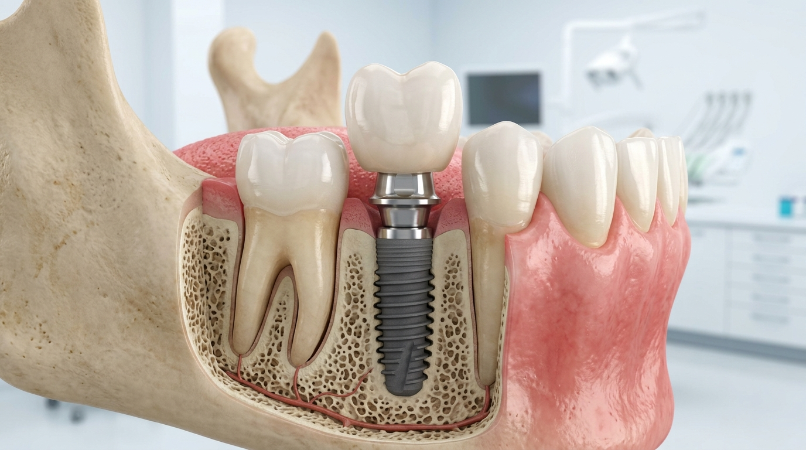

İmplantolojiİmplant Tedavisi
Kaybedilen doğal dişlerin yerine çene kemiğine yerleştirilen, doku dostu saf titanyum vidalarla uygulanan kalıcı diş kökü tedavisidir.
✓ Ağrısız & Acısız Lokal Anestezi
✓ Sertifikalı Saf Titanyum Vidalar
✓ Doğal Çiğneme ve Konfor